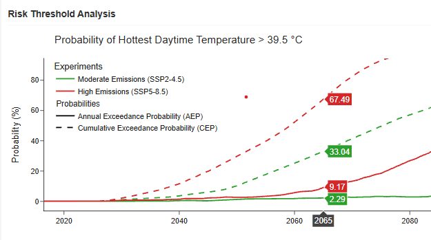
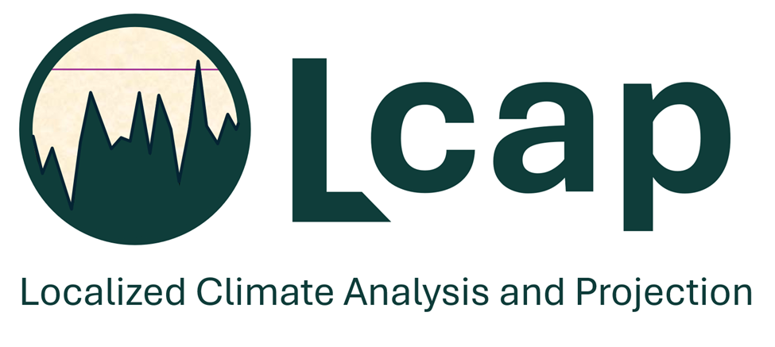
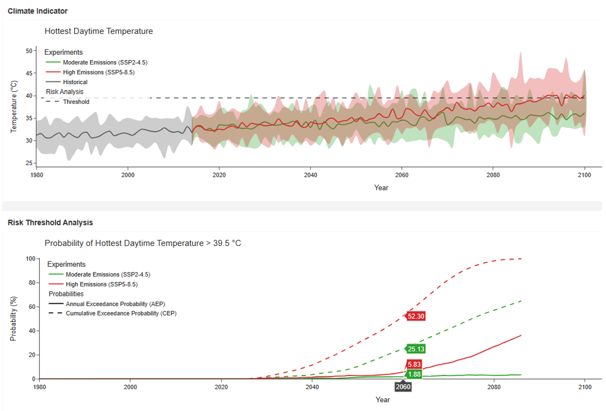
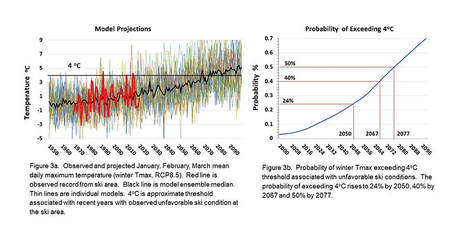
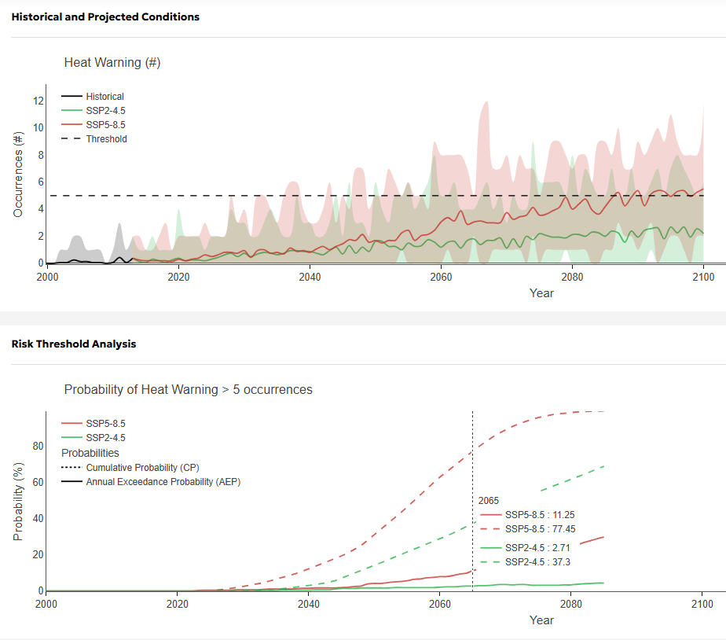
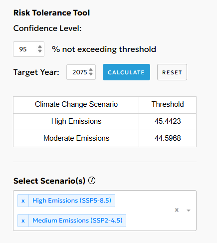

Climate Projections
Detailed climate histories and localised model projections for long-horizon planning.
West Kootenay, British Columbia
Climatic Resources Consulting provides climate change expertise for resilience planning and asset management, combining scientific rigor with practical guidance for engineers, asseet managers and municipal planning teams.


Featured Platform
LCap is CRC's core software platform and the engine behind our probability-based climate risk assessments for site-specific operations and infrastructure. Based on localized climate model data, LCap provides probability curves that quantify the likelihood of exceeding user-defined climate thresholds that are critical for assets. This shifts the discussion from “How much change?” to “What is the probability that a defined design limit is exceeded, and when?”
CRC has provided a LCap 'Lite' version of the software (three climate indicators)for nine communities in the Canadian Columbia Basin.What We Do
Based in the West Kootenay region of British Columbia, Climatic Resources Consulting (CRC) is a data-driven, climate resilience software and consulting company. We provide leading edge climate projections and quantitative risk analysis that facilitate the prioritisation of climate risks within asset management structures.
The approach and related software, Localised Climate Analysis and Projections (LCap), uses statistical downscaling and probabilistic analysis to generate site-specific climate climate projections. LCap enables planners and engineers to use a probability-based approach to undertake targeted climate change planning for specific community operations and infrastructure.
Detailed climate histories and localised model projections for long-horizon planning.
Threshold exceedance probabilities for climate-sensitive infrastructure and services.
Decision-ready climate data integrated into resilience and capital planning workflows. Quantitative prioritization of adaptation actions for assets and operations.
Case Studies

The work provided the City of Edmonton with projections for 48 CMIP6 climate indicators that were bias corrected to the inner city historical climate record to include the urban heat island effect. Based on these projections, LCap computes the probabilities of exceeding specific, user-defined thresholds. In this example, the top panel shows projected annual hottest daytime temperature for SSP2-4.5 and SSP5-8.5 and the 39.5 degree threshold. The bottom panel shows risk threshold analysis showing probability of hottest daytime temperature exceeding 39.5°C under the different emissions scenarios. The solid curves show the annual exceedance probability which is the inverse of the return period. The dashed curves show the cumulative probability which is the probability of exceeding the 39.5°C threshold at least once in the planning timeframe (2026 - 2065).

For a Nordic ski operation in British Columbia, CRC produced a 100-year climate history and 21st-century projection set, then linked those datasets to operational snow and temperature thresholds to evaluate viability under changing conditions. This data guided resource allocation choices between the current valley-bottom site and a higher-elevation alternative..

CRC developed ‘lite’ versions of LCap for 9 communities in the Canadian Columbia Basin for the Columbia Basin Trust’s Basin Source website. Three climate indicators (Hottest Daytime Temperature, Maximum One-Day Precipitation and Heat Warning) are provided for each community. This example shows SSP2-4.5 and SSP5-8.5 projections for the number of Heat Warning for the City of Castlegar (top panel). The bottom panel shows the probabilities of exceeding 5 heat warnings in a year for the 2 SSPs. Heat warnings are issued when there are 2 or more consecutive days with a daytime maximum temperature of 35°C or warmer, and an intervening nighttime minimum temperature of 18°C or warmer. The solid curves show the annual exceedance probability which is the inverse of the return period. The dashed curves show the cumulative probability which is the probability of exceeding 5 heat warnings in a season at least once in the planning timeframe (2026 - 2065). Users can further explore the Risk Tolerance Tool on the Basin Source website.

In all cases, LCap provides a Risk Tolerance Tool that determines the value of the indicator under consideration that is associated with a user-defined confidence level. To use the Risk Tolerance Tool, the user enters the desired confidence level and target year at the end of the planning timeframe. In this application, the confidence level is the probability that a threshold that would cause failure of an asset will not be exceeded in the timespan between now and the target year. In general terms, the higher the costs associated with failure of an asset are, the higher the confidence level should be. Once the confidence level is entered, LCap returns the indicator value that will not be exceeded with the desired confidence level in the planning timeframe. In this example using the Hottest Daytime Temperature under SSP5-8.5 for the City of Cranbrook, entering 95% confidence and a target year of 2075 yields 45.4°C. In other words, temperature-sensitive assets in the City of Cranbrook should be designed to withstand 45.4°C to have 95% confidence in them not failing due to high ambient temperature over the next 50 years. Users can further explore the Risk Tolerance Tool on the Basin Source website.
Team
Mel Reasoner's work bridges climate science and practical implementation, grounded in the realities of rural BC and the needs of engineers and asset managers making long-term decisions about infrastructure, operations, and community risk.
Mel holds a PhD in Earth and Atmospheric Science from the University of Alberta, where his research focused on reconstructing environmental and climate history over the last ca. 13,000 years in the Canadian and Colorodo Rocky Mountains.
Team
Ben Ghertner brings a background in scientific computing and numerical weather prediction to CRC's work developing probability-based climate risk assessments.
He holds a Master of Science in Applied and Computational Mathematics from Simon Fraser University, where his research focused on numerical modelling of atmospheric cloud dynamics and testing weather forecast models.
Team
Jonathan Doyle brings more than fifteen years of atmospheric research experience to CRC, with a background in cloud microphysics, numerical weather prediction, and high-performance scientific computing.
He collaborates with CRC through his role as the Advanced Computing team lead at Selkirk Innovates, and holds a Master of Science in Atmospheric Science from Dalhousie University, where his research focused on Arctic lidar measurements of water vapour and cloud processes.
About CRC
Since CRC's inception, the company has focused on providing communities and organisations with detailed climate histories and localized climate model projections, while facilitating evidence-based adaptation and resilience planning.
Contact
Climatic Resources Consulting
722 Third St.
Nelson, BC V1L 2R2 Canada